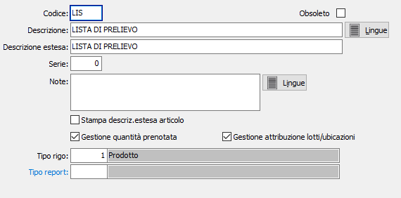

Causali liste di prelievo
Le causali liste di prelievo vengono utilizzate al momento dell’inserimento di una lista di prelievo e determinano il tipo di documento da emettere.
E’ possibile gestire più causali di liste, e più numerazioni progressive (serie). In funzione dei flags e dei parametri indicati, una causale di ordine può gestire o meno l’aggiornamento della quantità prenotata, può gestire o meno l'attribuzione automatica di lotti/ubicazioni e così via.

CODICE: Codice alfanumerico di 3 caratteri, a libera scelta dell'utente, per individuare la causale attiva. Sul campo sono attive le funzioni di ricerca (F9) sulla tabella stessa.
DESCRIZIONE: Campo alfanumerico di 30 caratteri per inserire la descrizione della causale attiva. Questa descrizione viene stampata sui documenti se il programma di stampa lo prevede.
LINGUE: bottone che attiva la tabella di memorizzazione della descrizione in esame nelle varie lingue utilizzate dall’utente.
DESCRIZIONE ESTESA: Campo alfanumerico di 60 caratteri per inserire la descrizione estera della causale attiva ad uso interno dell’utente. Questa descrizione non viene stampata sui documenti ma viene visualizzata nelle ricerche.
SERIE: Campo numerico per inserire il numero di serie del documento. Ciascuna serie attiva una propria numerazione di documenti. E’ necessario, in fase di immissione del documento, per proporre automaticamente e correttamente il numero progressivo del documento acquisito dalla tabella protocolli.
NOTE: campo note per descrizioni relative al documento attivo.
LINGUE: bottone che attiva la tabella di memorizzazione della note in esame nelle varie lingue utilizzate dall’utente.
STAMPA DESCRIZIONE ESTESA ARTICOLO: Indica se sul documento deve essere riportata e stampata la descrizione estesa dell'articolo (casella con segno di spunta).
GESTIONE QUANTITÀ PRENOTATA: indica se abilitare la gestione della quantità prenotata. La presenza della spunta determina l’aggiornamento della quantità prenotata sugli ordini da parte della causale attiva. In caso contrario, l’aggiornamento non viene effettuato.
GESTIONE ATTRIBUZIONE LOTTI/UBICAZIONI: indica al programma di generazione liste di prelievo se in presenza di un ordine con lotto o ubicazione base deve essere effettuata l'attribuzione automatica in base alla giacenza fino a eventuale copertura completa del lotto o ubicazione base (casella con segno di spunta). In caso contrario l'attribuzione non viene effettuata.
TIPO RIGO PREFERENZIALE: Indica il tipo rigo da proporre in fase di emissione della lista di prelievo. Sul campo sono attive le funzioni di ricerca (F9).
TIPO REPORT: consente di specificare un tipo di report specifico per i documenti che saranno emessi utilizzando questa causale. Sul campo sono attive le funzioni di ricerca (F9).
OBSOLETO: flag attivabile dall’utente per inibire il possibile utilizzo dell’elemento di tabella in esame nelle successive transazioni.